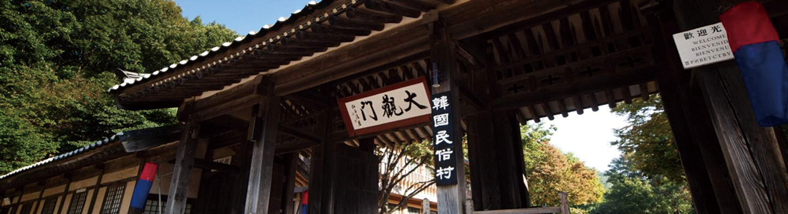
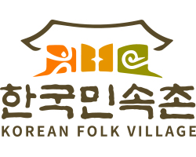

> 한국민속촌 > 민속촌의 발자취
민속촌의 발자취
연혁
Since 1974. 대한민국 전통문화의 기준

“
한국민속촌이
걸어온길
”
한국민속촌이
걸어온길
”
-
- 2010s
- 2018.08 바닥분수 공원 오픈
- 2017.10 공방거리 조성
- 2015.03 놀이마을 리뉴얼 오픈
- 2014.10 한국민속촌 개관 40주년
- 2013.08 한국민속촌 브랜드 리뉴얼
- 2013.01 귀신전 오픈
- 2012.06 전설의 고향 오픈
- 2011.05 탈춤전시관 개관
-
- 2000s
- 옹기생활관 개관 2005.08
- 사극영상관 개관 (3개 전시관) 2004.05
- 미술관, 조각공원 오픈 2002.09
- 세계민속관 개관 2001.08
(전세계 16개국 유물 수집, 9개 전시관)
-
- 1990s
- 1999.05 유스호스텔 , 컨벤션센터 오픈
- 1997.05 어트랙션 테마파크 오픈
- 1995.12 전통민속관 개관 (7개 전시실),
한국민속촌 박물관 개관
-
- 1980s
- 1979 ~1990
전국 각지 실물가옥 이전, 마을 조성 보완
-
- 1970s
- 1974.10.03
한국민속촌 개관
경영철학
새로운 전통이 시작되는 곳 , 한국민속촌
비전(Vision)
대한민국을 대표하는
최고의 글로벌 전통문화브랜드
한국의 전통문화를 대표하는 브랜드로서 우리문화유산의 가치를 함께 나누는 컬처리더.
위대한 전통에서 미래를 조망하고 새로운 가치를 창조하는 글로벌 브랜드, 한국민속촌
미션(Mission)
Re-tradition
전통을 새롭게 시작하다

Tradition
- make a creation
- 재발견, 재해석을 통해
전통을 새롭게 창조한다
- make a people happy
- 더욱 새롭고 즐거운전통으로
사람들을행복하게한다
- make a people happy
- 전통을 통해 새로운 가치와
시너지를 만든다